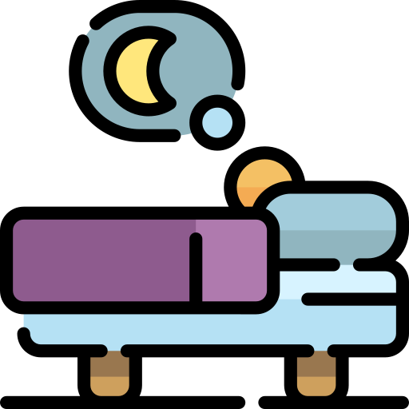
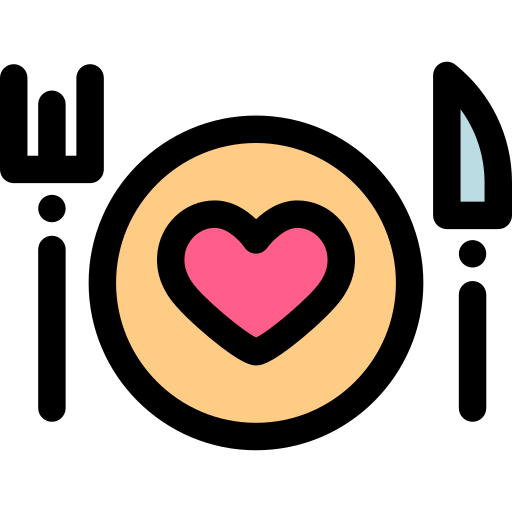

- Do whatever feels good for you
- Always keep asking questions if something is not clear for you or when you want more information
- Trust your body and it’s own healing capabilities
- You are allowed to have bad days, chronic illness is a fulltime job
- Make sure you are surrounded by nice, loving and understanding people
- Try to communicate your needs to your family so they can take things into account
- Friends who are not supportive of your illness are not real friends
- Try to find friends who give you energy and who make you happy

- Reduce your stress, this is so important
- Get enough sleep, prioritize your sleep
- Take as much rest as you want and need
- Find out what your trigger foods are so you can eliminate them from your diet
- Find out which food does work for you
- Drink enough water
- Try to avoid anything that causes inflammation: seed oils, gluten, sugar, alcohol
